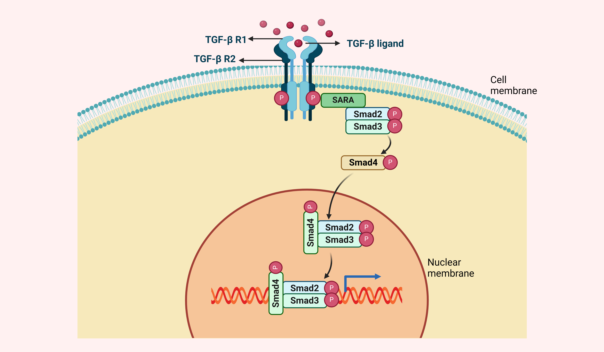

TGF-beta signaling pathway
| TGF-beta signaling pathway - Homo sapiens (human) |
| Pathway Source: KEGG Pathway |
| Genes involved in Wnt signaling pathway: APC, CK1, |
- 
The transforming growth factor-beta (TGF-beta) family members, which include TGF-betas, activins and bone morphogenetic proteins (BMPs), are structurally related secreted cytokines found in species ranging from worms and insects to mammals. A wide spectrum of cellular functions such as proliferation, apoptosis, differentiation and migration are regulated by TGF-beta family members. TGF-beta family member binds to the Type II receptor and recruits Type I, whereby Type II receptor phosphorylates and activates Type I. TGF-beta signaling pathways in CRC. TGF-beta receptors internalization occurs through clathrin-dependent or lipid-raft-dependent pathways. However, clathrin-dependent endocytosis of TGF-beta receptors positively facilitates TGF-beta signaling while internalization through lipid raft/caveolae exerts an inhibitory efect. The internalized receptors are targeted to distinct destination through diferent functions of Rab5 GTPases. Binding of TGF-beta ligands to TGFBR2 triggers initiation of TGF-beta signaling. By binding TGF-beta to TGFBR2, TGFBR2 recruits and phosphorylates TGFBR1, stimulating the protein kinase activity of TGFBR1, in which TGFBR1 is activated. Then, R-SMAD proteins or SMAD2 and SMAD3 are phosphorylated and activated by the activated TGFBR1, thereby allowing them to bind to SMAD4. As a result, the R-SMAD efectors make a complex with SMAD4 and SMAD. This complex migrates to the nucleus to regulate transcription of the target genes. In addition, SMAD7 has an inhibitory efect on the interaction of R-SMAD with TGFBR1. Multiple proteins contribute to the recruitment of R-SMAD proteins to the TGFBR1s and enhance SMAD activation, such as SARA. The figure was created with BioRender.com (accessed on 30 May 2024) and was exported under a paid subscription.